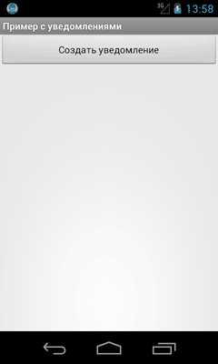
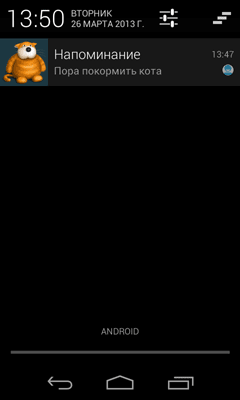

/* Моя кошка замечательно разбирается в программировании. Стоит мне объяснить проблему ей - и все становится ясно. */
John Robbins, Debugging Applications, Microsoft Press, 2000

/* Моя кошка замечательно разбирается в программировании. Стоит мне объяснить проблему ей - и все становится ясно. */
John Robbins, Debugging Applications, Microsoft Press, 2000
Вступление
Теория
Пример для Android 4
Удаление собственных уведомлений
Кроме Toast-уведомлений, существует также другой тип уведомлений, который выводится в системной строке состояния в виде значка. Если открыть окно уведомлений, то можно увидеть расширенную текстовую информацию об уведомлении.
Когда пользователь открывает расширенное сообщение, Android запускает объект Intent, который определён в соответствии с уведомлением. Можно также конфигурировать уведомление с добавлением звука, вибрации и мигающих индикаторов на мобильном устройстве.
Этот вид уведомления удобен в том случае, когда приложение работает в фоновом режиме и должно уведомить пользователя о каком-либо важном событии. Уведомление будет висеть до тех пор, пока пользователь не отреагирует на него, в отличие от Toast-сообщения, которое исчезнет через несколько секунд. Фоновое приложение создает уведомление в строке состояния, но не запускает деятельность самостоятельно для получения пользовательского взаимодействия. Это должен делать только сам пользователь в удобное ему время.
Чтобы создать уведомление в строке состояния, необходимо использовать два класса:
Обратите внимание, что в имени классов спрятан кот (Notification, NotificationManager), что намекает на целевое использование уведомлений. Уведомляйте пользователя только о самом важном, например, что пора кормить кота.
В старых версия Android до версии 3.0 использовались классы и методы, которые теперь считаются устаревшими. Когда-то в данной статье был материал по этой теме, но пришло время отказаться от него. Я удалил этот материал. Он вам уже не пригодится, так как для старых версий можно использовать библиотеку совместимости (о ней чуть позже).
Начиная с Android 3, для уведомлений используется класс Notification.Builder.
package ru.alexanderklimov.notification;
import ...
public class NotificationDemoActivity extends Activity {
private static final int NOTIFY_ID = 101;
/** Called when the activity is first created. */
@Override
public void onCreate(Bundle savedInstanceState) {
super.onCreate(savedInstanceState);
setContentView(R.layout.activity_main);
}
public void onClick(View view) {
Context context = getApplicationContext();
Intent notificationIntent = new Intent(context, NotificationDemoActivity.class);
PendingIntent contentIntent = PendingIntent.getActivity(context,
0, notificationIntent,
PendingIntent.FLAG_CANCEL_CURRENT);
NotificationManager nm = (NotificationManager) context
.getSystemService(Context.NOTIFICATION_SERVICE);
Resources res = context.getResources();
Notification.Builder builder = new Notification.Builder(context);
builder.setContentIntent(contentIntent)
.setSmallIcon(R.drawable.ic_launcher)
// большая картинка
.setLargeIcon(BitmapFactory.decodeResource(res, R.drawable.cat))
//.setTicker(res.getString(R.string.warning)) // текст в строке состояния
.setTicker("Последнее китайское предупреждение!")
.setWhen(System.currentTimeMillis()) // java.lang.System.currentTimeMillis()
.setAutoCancel(true)
//.setContentTitle(res.getString(R.string.notifytitle)) // Заголовок уведомления
.setContentTitle("Напоминание")
//.setContentText(res.getString(R.string.notifytext))
.setContentText("Пора покормить кота"); // Текст уведомленимя
Notification n = builder.getNotification();
nm.notify(NOTIFY_ID, n);
}
}
При создании уведомления надо получить ссылку на NotificationManager через вызов метода getSystemService(), передав ему в качестве параметра строковую константу NOTIFICATION_SERVICE, определённую в классе Context
Далее формируется внешний вид и поведение уведомления через построитель Notification.Builder. Вы можете задать текст уведомлений, значки и прочие атрибуты:
Остальные методы поняты по названиям.
После того, как мы сформировали уведомление, нужно создать объекты Intent и PendingIntent, которые описывают намерения и целевые действия. В нашем случае мы хотим запустить нашу активность, когда пользователь среагирует на уведомление.
На первой картинке мы видим, как появился маленький значок. Также появляется текст "Последнее китайское предупреждение!", который быстро исчезает.

Далее мы можем открыть уведомление, чтобы увидеть более подробную информацию.

Если коснуться уведомления, то запустится наша программа (даже если она была перед этим закрыта).
Совсем не обязательно запускать своё приложение, хотя это является распространённой практикой. Можете задать нужное поведение, например, запустить свой сайт по указанному адресу. Переделаем код:
Context context = getApplicationContext();
Intent notificationIntent = new Intent(Intent.ACTION_VIEW,
Uri.parse("http://developer.alexanderklimov.ru/android/"));
PendingIntent pendingIntent = PendingIntent.getActivity(context, 0,
notificationIntent, Intent.FLAG_ACTIVITY_NEW_TASK);
Notification.Builder builder = new Notification.Builder(context)
.setContentTitle("Посетите мой сайт")
.setContentText("http://developer.alexanderklimov.ru/android/")
.setTicker("Внимание!").setWhen(System.currentTimeMillis()) // java.lang.System.currentTimeMillis()
.setContentIntent(pendingIntent)
.setDefaults(Notification.DEFAULT_SOUND).setAutoCancel(true)
.setSmallIcon(R.drawable.ic_launcher);
NotificationManager nm = (NotificationManager) getSystemService(Context.NOTIFICATION_SERVICE);
nm.notify(NOTIFY_ID, builder.getNotification());
Обратите внимание, что на этот раз мы не указали картинку для большого значка и система подставляет в этом случае маленький значок, растягивая его до нужных размеров. Также появился новый метод setDefaults(), о котором говорится ниже.
Также можно вывести индикатор прогресса, чтобы указать текущий ход выполнения задачи. Можно установить бесконечное выполнение:
setProgress(100, 50, false);
Вы можете из программы удалить своё уведомление, посланное по глупости (не вздумайте удалять уведомления про кормёжку кота!).
nm.cancel(NOTIFY_ID); // nm - экземпляр класса NotificationManager
Можно добавить вибрацию, звуковой сигнал или мерцание светодиодами для ваших уведомлений при помощи настроек по умолчанию. В свойстве defaults вы можете сочетать следующие константы:
Чтобы к уведомлению добавить звук и вибрации по умолчанию, используйте код:
notification.defaults = Notification.DEFAULT_SOUND |
Notification.DEFAULT_VIBRATE;
Если хотите установить сразу все значения по умолчанию, задействуйте константу Notification.DEFAULT_ALL.
Использование звуковых оповещений для уведомления пользователя о событиях, связанных с устройством (например, входящий звонок), стало привычным. Большинство стандартных событий, от входящих звонков до новых сообщений и низкого заряда батареи, объявляются с помощью звуковых мелодий. Android позволяет проигрывать любой звуковой файл на телефоне в качестве уведомления. Чтобы это сделать, нужно присвоить свойству sound путь URI:
notification.sound = ringURI;
Также можно использовать собственный звуковой файл, загруженный на устройстве или добавленный в проект в качестве ресурса.
Uri ringURI =
RingtoneManager.getDefaultUri(RingtoneManager.TYPE_NOTIFICATION);
notification.sound = ringURI;
С SD-карты:
notification.sound = Uri.parse("file:///sdcard/cat.mp3"); // если знаем точный путь!
Вы можете использовать функцию виброзвонка в телефоне, чтобы сопровождать ваше уведомление вибрацией для привлечения внимания пользователя.
Чтобы использовать виброзвонок, передайте в свойство vibrate объекта Notification массив значений типа long. Постройте массив, учитывая, что значения, отвечающие за продолжительность вибрации (в миллисекундах), чередуются со значениями, которые означают длину паузы между вибрациями.
Прежде чем использовать виброзвонок в своем приложении, необходимо получить нужные полномочия:
<uses-permission android:name="android.permission.VIBRATE"/>
В следующем примере показано, как изменить уведомление, чтобы одна секунда вибрации сменялась одной секундой паузы на протяжении пяти секунд:
long[] vibrate = new long[] { 1000, 1000, 1000, 1000, 1000 };
notification.vibrate = vibrate;
Объект Notification включает в себя свойства для настройки цвета и частоты мерцания светодиодов устройства. Здесь стоит обратить внимание, что конкретные модели устройств могут не содержать светодиодные индикаторы или иметь другие цвета.
Свойство ledARGB может устанавливать цвет для светодиодной подсветки. Свойства ledOffMS и ledOnMS позволяют регулировать частоту и поведение светодиодов. Вы можете включить светодиоды, присвоив свойству ledOnMS значение 1, а ledOffMS – 0. Присвоив им обоим значения 0, светодиоды можно выключить.
Настроив работу со светодиодами, необходимо также добавить флаг FLAG_SHOW_LIGHTS к свойству flags объекта Notification.
В следующем фрагменте кода показано, как включить на устройстве красный светодиод:
notification.ledARGB = Color.RED;
notification.ledOffMS = 0;
notification.ledOnMS = 1;
notification.flags = notification.flags | Notification.FLAG_SHOW_LIGHTS;
Вы можете делать уведомления текущими и/или настойчивыми, устанавливая флаги FLAG_INSISTENT и FLAG_ONGOING_EVENT. Уведомления, помеченные как текущие, используются для представления событий, которые выполняются в данный момент времени (например, загрузка файла, фоновое проигрывание музыки). Текущие уведомления необходимы для сервисов, работающих на переднем плане. Пример установки флагов:
notification.flags = notification.flags | Notification.FLAG_ONGOING_EVENT;
В расширенной статусной строке текущие события отделены от обычных, чтобы вы сразу могли их отличить.
Настойчивые уведомления непрерывно повторяют звуковые сигналы, вибрируют и мерцают светодиодами, пока не будут остановлены. Подобные уведомления, как правило, используются для событий, которые требуют немедленного и своевременного внимания, таких как входящий звонок, срабатывание будильника или время кормёжки кота. В следующем фрагменте кода показано, как сделать уведомление настойчивым:
notification.flags = notification.flags | Notification.FLAG_INSISTENT;
В старых устройствах были свои классы для уведомлений, которыми не стоит пользоваться. Вместо этого используется класс NotificationCompat.Builder, который входит в пакет android.support.v4.app. Практически, вам нужно чуть-чуть изменить имя класса Notification.Builder и весь код будет работать на старых устройствах.